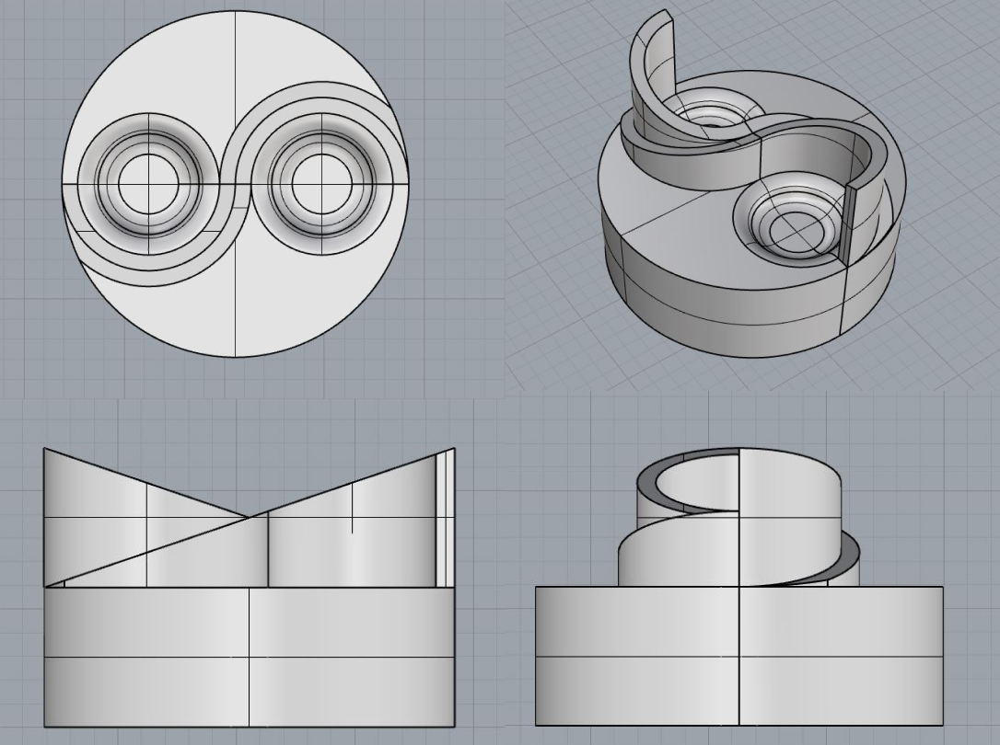

Born and raised in the lower mainland of BC Canada, I enjoy the outdoors and staying active like snowboarding, hiking, dancing, and playing badminton. In my free time, I also like to design 3D models and create objects in a virtual space. While I am on my computer I thoroughly enjoy listening to music while I work as it helps me be immersed in my projects.

Simon Fraser University (SFU) has a program called the School of Interactive Art and Technology (SIAT) which branches off into 3 categories: Arts, Design, and Interactive Systems. My specific degree is SFU SIAT Bachelor of Science with a design concentration which focuses more on UI, UX, and front/back-end web development. Through this experience, I have created many relationships with fellow designers and learned ways of recognizing design problems and implementing solutions. I hope to further continue learning from designers and utilize this achieved knowledge in my future projects.